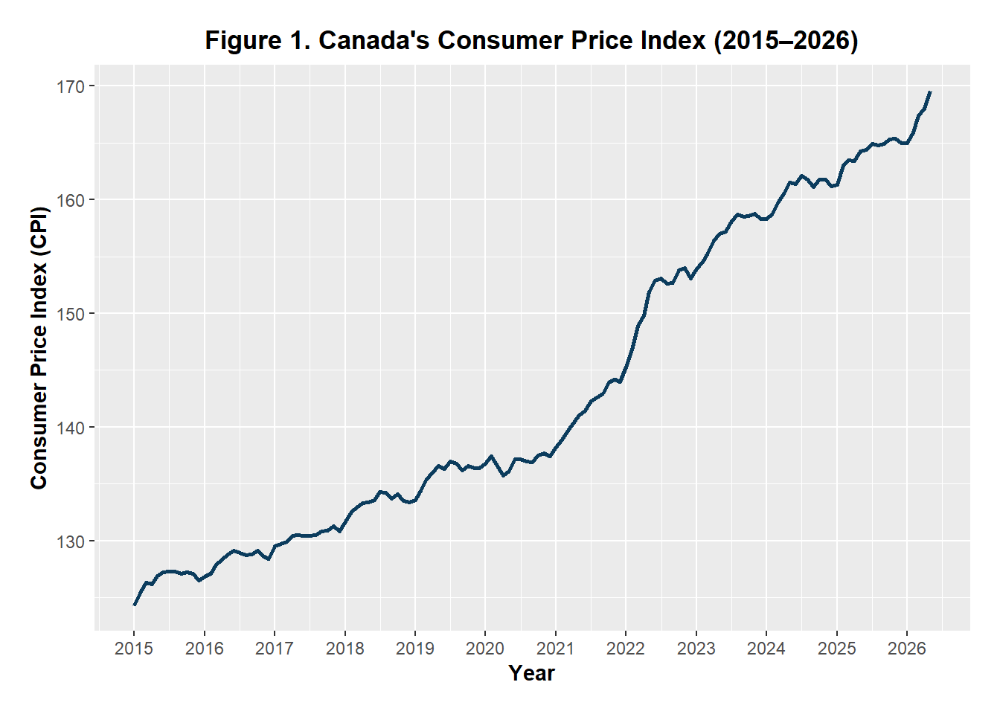
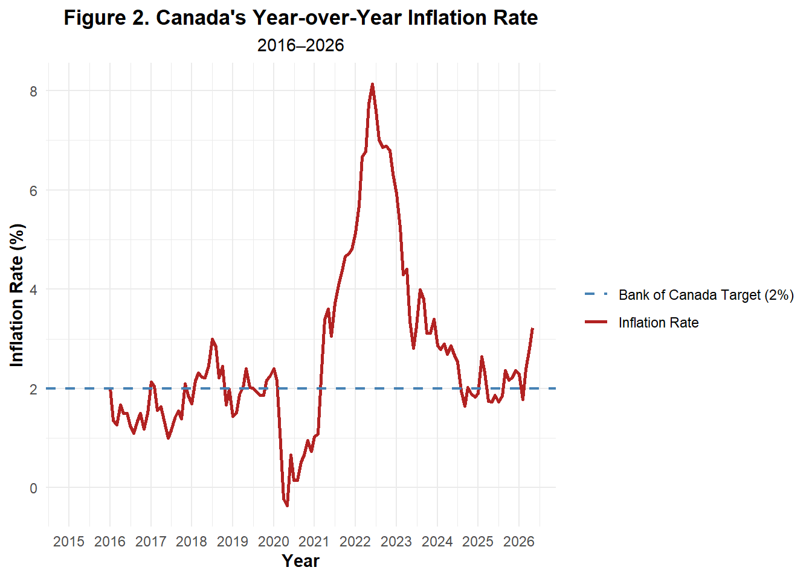

| Observations | Mean | Median | SD | Minimum | Maximum |
|---|---|---|---|---|---|
| 137 | 143.33 | 137.4 | 13.68 | 124.3 | 169.6 |
Canada’s Inflation Rate (2015–2026): Has Price Stability Returned?
1 Introduction
Inflation is one of the most important macroeconomic indicators because it measures changes in the general price level of goods and services over time. In Canada, inflation is measured using the Consumer Price Index (CPI), published monthly by Statistics Canada. The Bank of Canada aims to maintain inflation at approximately 2% to promote price stability and sustainable economic growth.
This report analyzes Canada’s monthly Consumer Price Index from January 2015 to May 2026 to examine inflation trends and evaluate whether price stability has returned.
2 Objective
- Examine the long-term trend in Canada’s Consumer Price Index.
- Calculate the year-over-year inflation rate.
- Compare inflation with the Bank of Canada’s 2% target.
- Discuss the implications of inflation for the Canadian economy.
3 Data Source
Statistics Canada Consumer Price Index (CPI)
Monthly Data
Geography: Canada
Period: January 2015 – May 2026
4 CPI Descriptive Statistics
Interpretation
Table 1 presents the descriptive statistics for Canada’s All-items Consumer Price Index (CPI) from January 2015 to May 2026. The dataset contains 137 monthly observations, reflecting changes in the overall price level over more than eleven years. The average CPI during the sample period was 143.33, while the median value was 137.40, suggesting that the CPI increased over time, particularly in the latter part of the sample. The CPI ranged from 124.30 to 169.60, with a standard deviation of 13.68, indicating a steady upward trend in prices rather than large month-to-month fluctuation
5 Year-over-Year Inflation
The year-over-year inflation rate was calculated using the percentage change in the Consumer Price Index relative to the same month in the previous year:
\[\text{Inflation Rate}_t = \left( \frac{CPI_t - CPI_{t-12}} {CPI_{t-12}} \right)\times100\]
where
- \[(CPI_t)\] is the Consumer Price Index in month t.
- \[(CPI\_{t-12})\] is the Consumer Price Index in the same month of the previous year.
| Table 2 | |||||
| Descriptive Statistics for Canada's Year-over-Year Inflation Rate | |||||
| Observations | Mean | Median | Standard Deviation | Minimum | Maximum |
|---|---|---|---|---|---|
| 125 | 2.65 | 2.16 | 1.74 | -0.37 | 8.13 |
Interpretation
Canada’s average inflation rate was 2.65% between 2016 and 2026, slightly above the Bank of Canada’s 2% target. Inflation varied from -0.37% to 8.13%, with a standard deviation of 1.74, indicating moderate fluctuations over the sample period.
6 Consumer Price Index (CPI) Trend

Interpretation
Figure 1. This illustrates the trend in Canada’s Consumer Price Index (CPI) from 2015 to 2026. The CPI increased steadily throughout the period, indicating a sustained rise in the overall price level. The sharpest increase occurred between 2021 and 2022, reflecting heightened inflationary pressures following the COVID-19 pandemic.

Interpretation
Figure 2. Canada’s Year-over-Year Inflation Rate Relative to the Bank of Canada’s Inflation Target (2016–2026)
It illustrates Canada’s year-over-year inflation rate from 2016 to 2026 relative to the Bank of Canada’s 2% inflation target. Inflation remained relatively stable and close to the target between 2016 and 2019 before falling below zero during the COVID-19 pandemic in 2020. It then increased sharply, peaking at 8.13% in 2022, before gradually declining. Although inflation has moderated considerably, the latest observations remain above the Bank of Canada’s 2% target, suggesting that price stability has improved but has not yet been fully restored.
7 Discussion
The analysis shows that Canada’s inflation remained relatively stable between 2015 and 2019, with the inflation rate generally staying close to the Bank of Canada’s 2% target. During 2020, inflation briefly turned negative as the COVID-19 pandemic slowed economic activity and reduced consumer demand. As the economy recovered, inflation increased sharply, reaching a peak of 8.13% in 2022. This surge was driven by a combination of supply chain disruptions, rising energy prices, labour shortages, and strong consumer demand.
Although inflation has declined significantly since its 2022 peak, the latest data indicate that it remains slightly above the Bank of Canada’s 2% target. Overall, the findings suggest that Canada has made substantial progress in restoring price stability; however, inflation has not yet fully returned to the Bank of Canada’s 2% target. Continued monitoring of inflation will be important for assessing future monetary policy decisions and the overall health
8 Technical Details
- Programming Language: R
- Environment: Quarto
- Packages: tidyverse, ggplot2, dplyr, tidyr, lubridate, gt
- Data Source: Statistics Canada
- Frequency: Monthly
- Period: January 2015 – May 2026
9 References
Bank of Canada. (n.d.). Inflation-control target. https://www.bankofcanada.ca/rates/indicators/key-variables/inflation-control-target/
Statistics Canada. (2026). Consumer Price Index, monthly, not seasonally adjusted (Table 18-10-0004-01). https://www150.statcan.gc.ca/